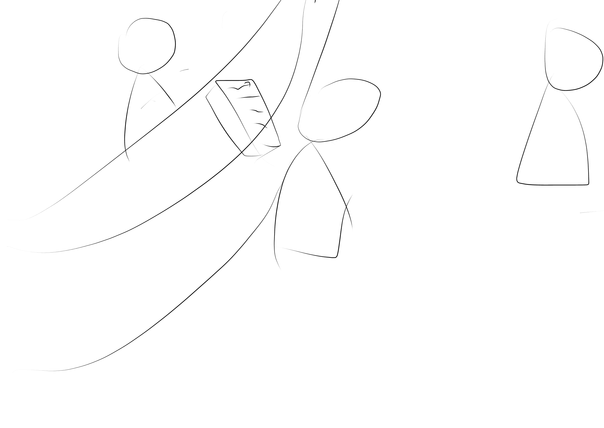
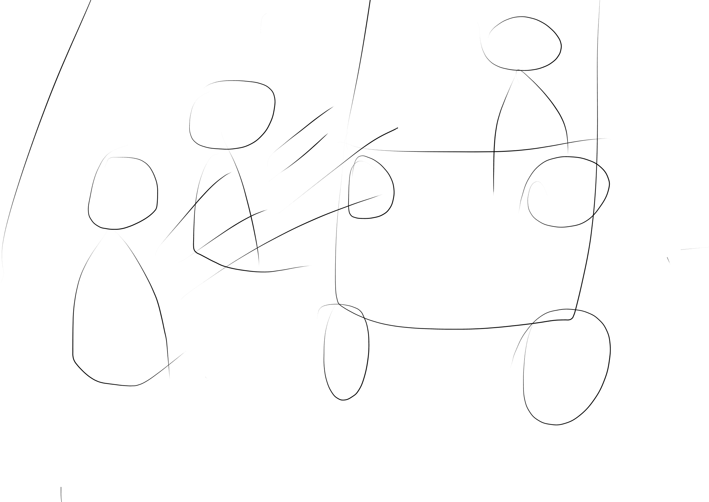
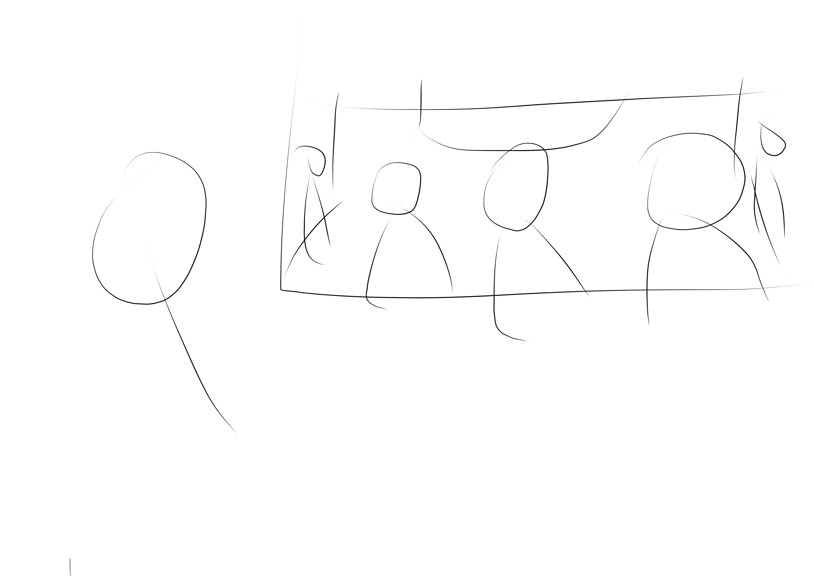
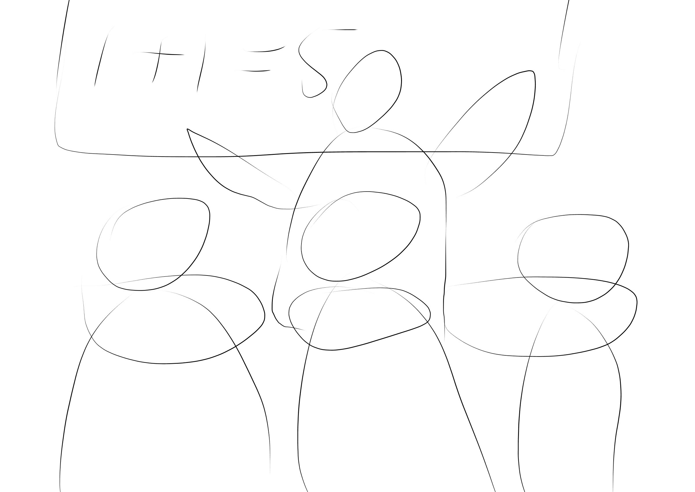
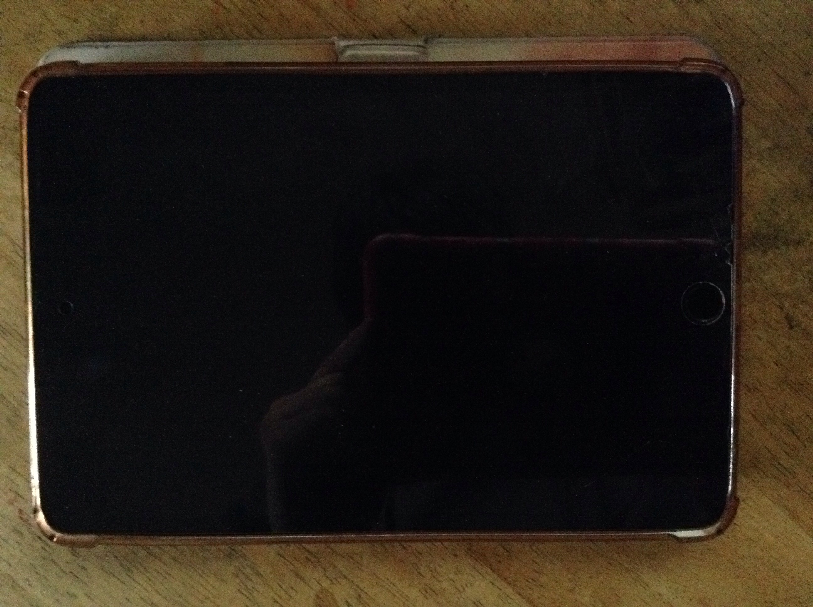
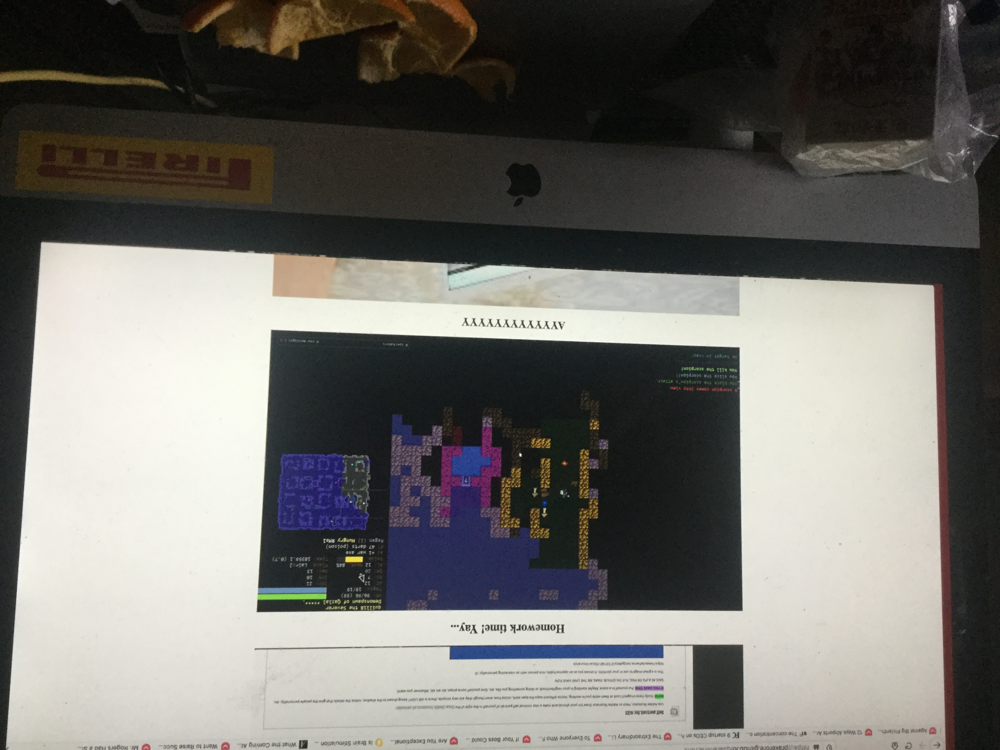
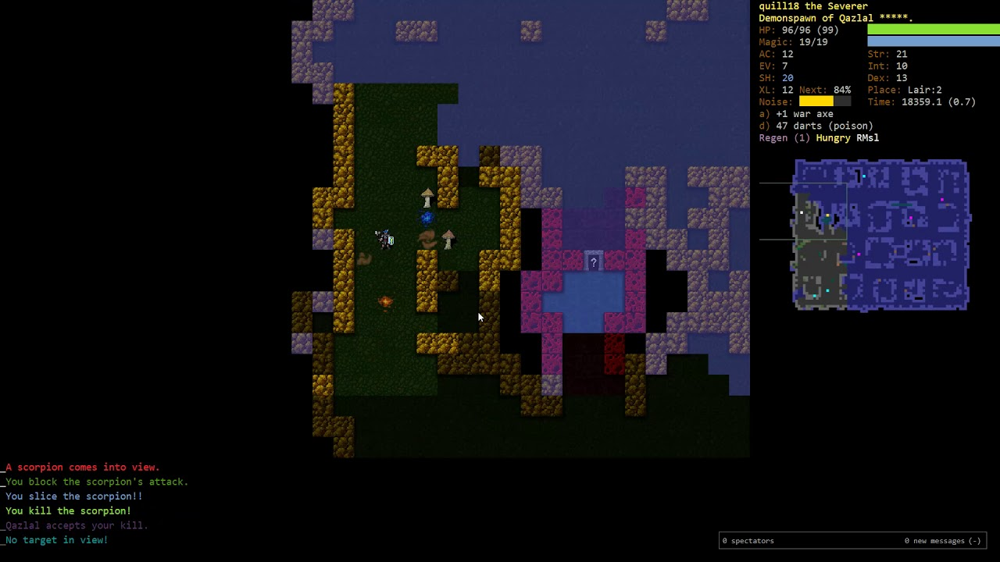
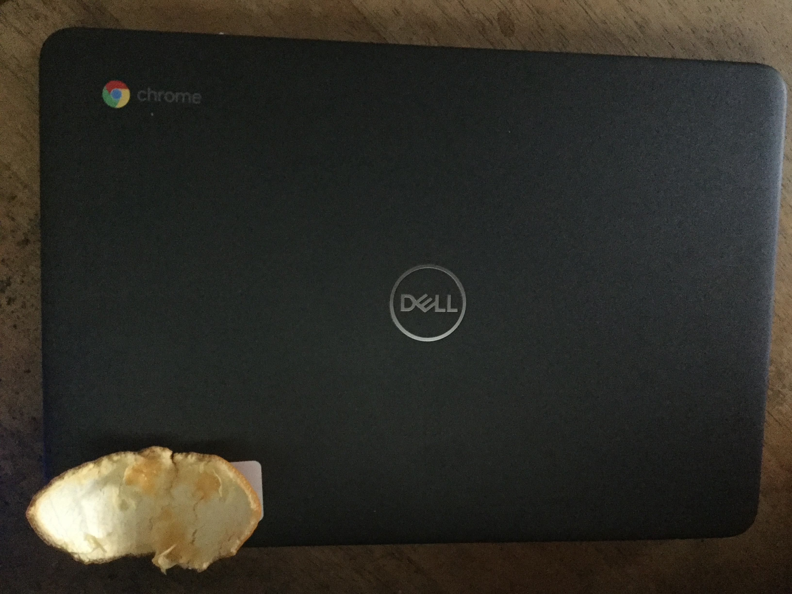

Lance's Quarantine

I was in the library when I recieved news there was going to be a quarantine. People were talking about it.

After class, me and my brother took the bus to Queens Boulevard. We thought about what we would do at home.

We went up to Queens Center Mall, where there were still people walking around. We didn't want to buy anything, so we then proceeded to go home.

Knowing I didn't have to go to school physically, I was relieved. As for my brother...
...he was disappointed it had to happen on his first semester. He goes to the same college as me.

By the way, we get our food from online. We buy from many food vendors, and occasionally we use Grubhub.

I used my iPad mini4 for surfing and occasional class time. My main medium for doing homework is on the iMac 2010.

It is a decade old, which means it was slow. I soon got a Chromebook for loaning. I'll get to that later.

Homework time! Yay... (Yes, this iMac is where I do my homework.)

(DCSS, my favorite game) Rouguelikes are my favorite because they wait for you and it is an RPG. This is by far my favorite because it does not require memorizing a wiki to win...

I also finally got my Chromebook from requesting it. We only had one computer at home so sharing was tough.